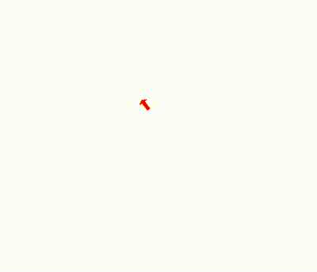

Project Description
This project demonstrates an example of epsilon point control applied to a smooth differential drive model. The controller is implemented in Python, and simulations are carried out in different forms, including basic integration simulations, animations using Matplotlib, and simulations in Gazebo and ROS2.
Introduction
The unicycle model is a common state space representation used to express a differential drive robot. The unicycle model state consists of its x and y positions (x1, x2), its orientation (φ), its forward velocity (υ), and its angular velocity (ω). The state, expressed in vector form, is:
x = [x1, x2, φ, υ, ω]The dynamics of this system are defined by:
̇x = [υ cos(φ), υ sin(φ), ω, a, α]Why Epsilon Point Control?
The difficulty with controlling this system lies in its "non-holonomic" constraints, which are non-integrable. This system cannot move orthogonal to its current orientation. To alleviate this, we use epsilon point control. The basic idea is to control a point ε away from the robot's position, bypassing the non-holonomic constraint.
Mathematics Behind Epsilon Point Control
Definition of Epsilon State
We define a point ε distance away as yε:
yε = [x1, x2] + ε [cos(φ), sin(φ)]To derive the full state, we also take the first and second derivatives of yε:
̇yε = Rε &bar;υ, ̇̇yε = Rε χε &bar;υ + Rε &bar;aWhere:
Rε = [cos(φ), -ε sin(φ) ; sin(φ), ε cos(φ)]Feedback Linearization
The goal of feedback linearization is to express the control inputs (&bar;a) such that they allow the system to follow the desired path.
&bar;a = Rε-1 (̇̇yε - Rε χε &bar;υ)Trajectory Tracking
Trajectory tracking is achieved by defining the desired state of yε and determining its derivatives. For this simulation, the chosen trajectory is:
y = [x1, x2] = [sin(t), t]Matplotlib Animation
A basic animation using Matplotlib was created, utilizing the state of the integrated system to move an arrow around on a blank plot. The results of this simulation are shown below:
Gazebo and ROS2 Simulation
The controller code was implemented in the ROS2 framework and simulated in Gazebo. A basic TurtleBot was used, and forward and angular velocities were recalculated using the smooth differential drive model. The results of this simulation are shown below:

Conclusion
This project provided valuable insights into differential drive robots and their control. The application of epsilon point control proved to be effective for trajectory tracking, and it was interesting to implement and observe these techniques in both Gazebo and ROS2. This approach could be promising for controlling real differential drive robots in the future.